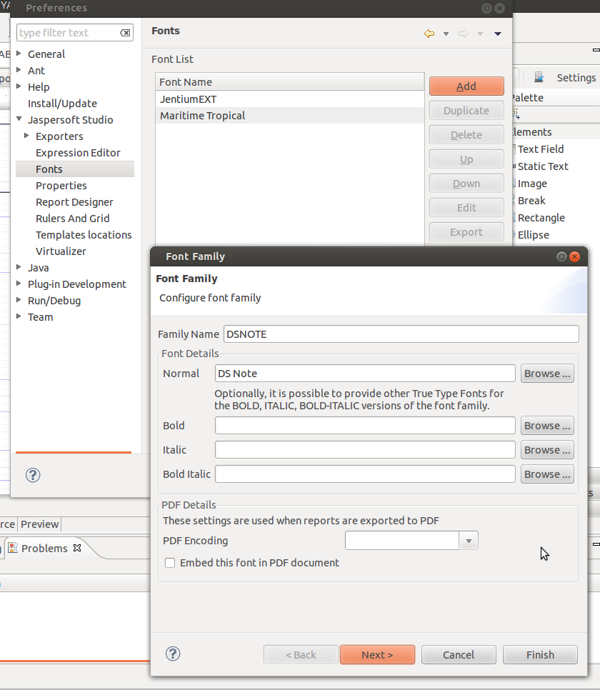

By default JasperReports library will use only system fonts,
if users want to add some new fonts they have to package this fonts in
a jar file and add this file to the JasperReports classpath. This
fonts are visible inside the report due to JasperReports fonts
extensions mechanism. Jaspersoft Studio provide a preferences page for
fonts management inside the workspace. This page create a list of
fonts stored inside Jaspersoft studio that are visible from all the
reports inside the workspace, and a tool to create a jar package with
font ready for deployment. Users should add this jar file to the
classpath of the JasperReports deploy environment or to the projects
classpath where this fonts should be available.
Steps to add a font to the list are simple. Click on add
button, a Font Family wizard dialog will pop-up, fill a family name,
select font for normal face, select fonts for bold, italic, bold
italic if available, setup pdf options, go to next page, select which
fonts for html or other formats will be used, go to next page select
locales for which this font will be used if any, click finish.
To export fonts, just select fonts you want to export and
press “Export” button select the place where you want to save. To add
font to a project right click on the fonts jar go to Build Path → Add
To Build Path, click inside the reports select a text element you want
to apply the font, go to Properties view and change the font, fonts
from the jar should be available in the fonts list.
